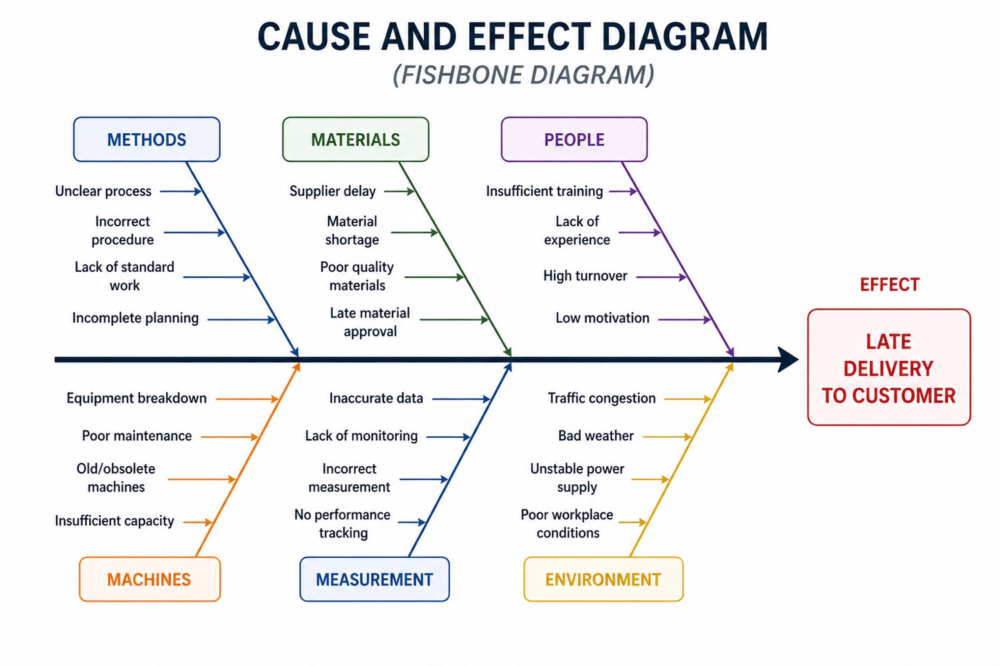

Lean Assessment
Current-state assessment, future-state proposal and results or savings tracking.
- Workflow and performance review
- Waste and bottleneck mapping
- Implementation roadmap
Consulting and training
Consulting and courses are promoted together because improvement needs both good system design and people who know how to run it.
Workshops make lean tools practical by connecting them to the team’s real daily work.
Offers
Current-state assessment, future-state proposal and results or savings tracking.
Introductory and hands-on training to help employees see waste in daily work.

Training and implementation support for quality assurance systems.
In-person or online training for employees on lean, quality, workflows and daily improvement.
Teach teams how to use digital tools and automation to improve repeatable workflows.

Lean Six Sigma belts plus practical modules for waste, 5S, 32 lean tools and 7 QC tools.
Method
Review processes, interview leaders, study data and define the largest improvement opportunities.
Set the transformation scope, KPIs, milestones and responsibilities so the work can move.
Map value streams, bottlenecks, quality gaps and waste with enough detail to measure change.
Co-design improvements, test them quickly and expand what works across the team.
Train teams, create standard work, build dashboards and keep improvement visible.
Start with a strategy call or assessment, then decide whether consulting, training or both will create the fastest value.